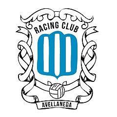
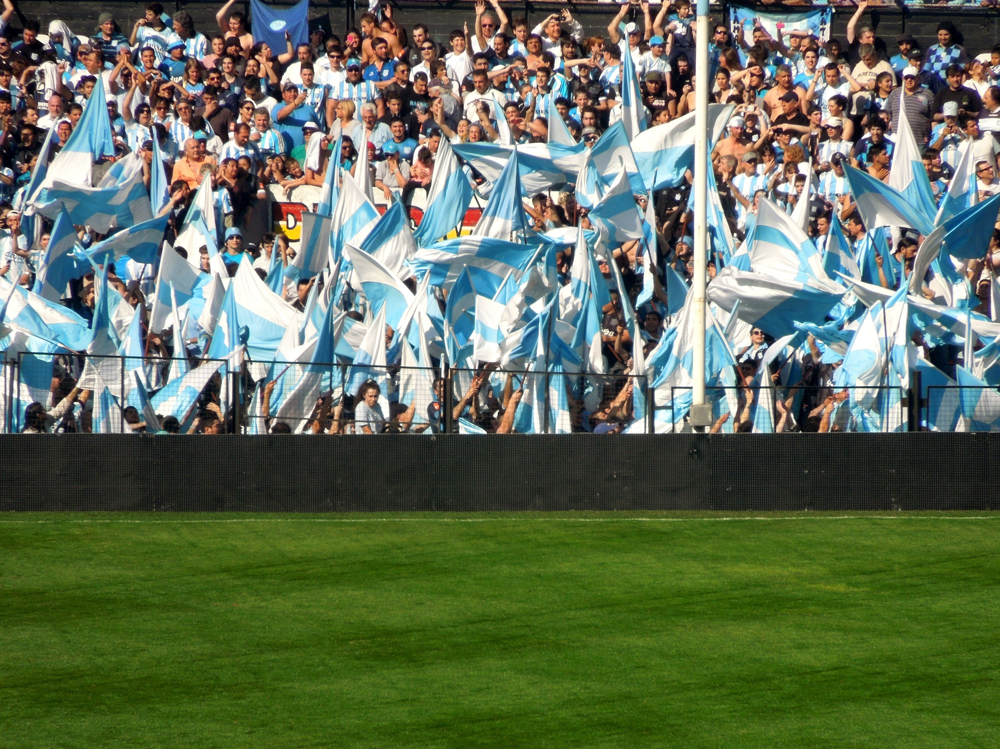
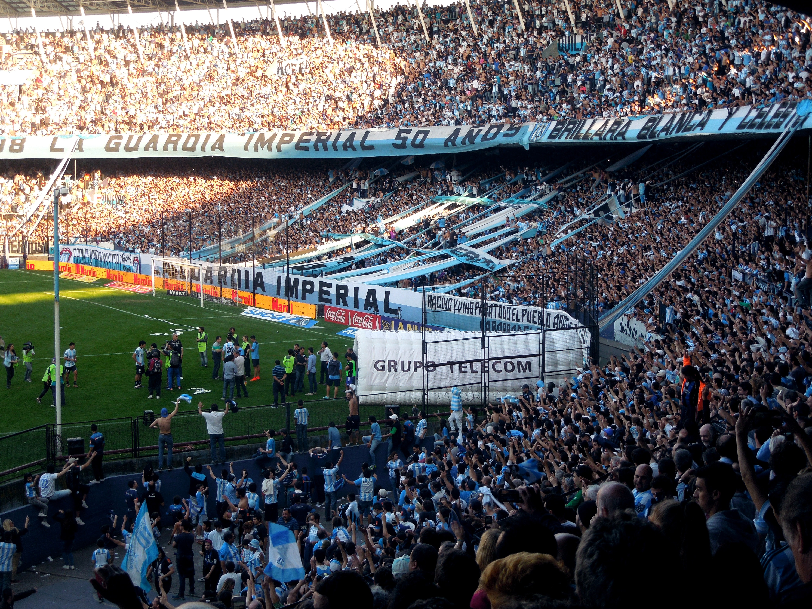
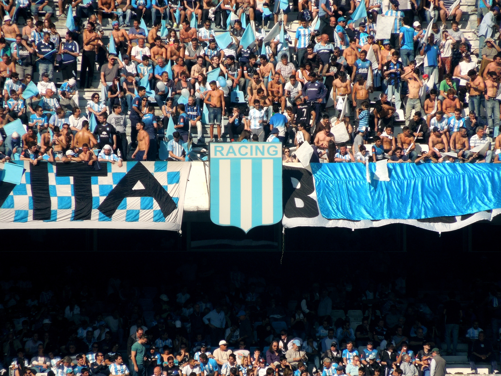

Historia de Racing

El 12 de mayo de 1901 un grupo de estudiantes del Colegio Nacional Central fundaron el Football Club Barracas al Sud (actualmente denominada Avellaneda) con la particularidad de ser el primer equipo argentino de fútbol fundado íntegramente por criollos, a diferencia de las demás instituciones, fundadas por ingleses.
Los miembros fundadores fueron los hermanos Arturo y Zenón Artola, Germán Vidaillac, Leandro Boloque, Pedro Viazzi, Pedro Werner, los hermanos Alfredo y Raimundo Lamoure, Ignacio Oyarzábal, los hermanos Ricardo y Ernesto Martín, Salvador Sorhondo, Julio Planisi, Francisco Balestrieri, Bernardo Etcheverry, los hermanos Evaristo y Alfredo Paz, Enrique Poujade, Elías Camels, José Güimil, Juan Sepich, José Paz, Antonio Capurro y Alejandro Carbone.
El 16 de marzo de 1902 un grupo mayoritario de socios del Barracas al Sud abandonó al club para fundar uno nuevo: Colorados Unidos del Sud. Esta segmentación no duró mucho, ya que Football Club Barracas al Sud había quedado diezmado por la partida de sus socios y Colorados Unidos del Sud no lograba el vuelo pretendido. Todos sabían que no podían continuar por ese camino bifurcado: “Así no podemos seguir. Dos clubes chicos no sirven. Uno grande, sí”, fueron las palabras efusivas del joven Evaristo Paz.
El 25 de marzo de 1903, en una reunión entre ambos clubes, se decidió que lo mejor para el fin común era unificar ambas instituciones bajo un mismo nombre. Germán Vidaillac, uno de los socios fundadores (de ascendencia francesa), mostró frente a sus compañeros una revista de automovilismo del país galo en cuya portada se leían las palabras "Racing Club" (Club de carreras en inglés). La moción fue aprobada clamorosamente por todos y el nuevo club había nacido. Un acta redactada por Alejandro Carbone oficializaría la creación del Racing Football Club en la finca de los hermanos Lamour. La votación de todos los presentes a cargo de Pedro Werner nombraría como presidente de la institución a Arturo Artola y como tesorero a Francisco Balestrieri.
En 1904 Racing consigue la copa Centro Gallego de Avellaneda, siendo esta la primera copa de su historia.
En el año 1905 Racing se afilia a la Argentine Football Association, convirtiéndose en la primera institución inscripta netamente criolla.12 En este mismo año se inscribe en la Tercera División del fútbol argentino y consigue el ascenso ese mismo torneo. También obtiene su segundo trofeo, la Copa La Prensa venciendo a River Plate por un amplio 5 a 0.
El 18 de octubre de 1908 se obtiene la Copa Diario La Verdad ganando por 3 a 2 al Montevideo Wanderers Fútbol Club de Uruguay, con goles de Pablo Frers (2) y Pedro Viazzi; siendo éste, el primer trofeo internacional de la institución.
El 6 de diciembre Racing juega la semifinal del Segunda División, eliminando a Boca Juniors por 1 a 0 (gol de Pablo Frers). El 13 de diciembre se juega la final contra River Plate, donde pierde por 2 a 1 (gol de Pablo Frers); obteniendo el segundo lugar pero sin lograr el ascenso.
En 1909 nuevamente Racing consigue el subcampeonato, esta vez cayendo contra el extinto GEBA y debe permanecer en dicha división por otro año más.
En este mismo año se vuelve a obtener la Copa Diario La Verdad ganándole al Club Atlético Boca Juniors por un abultado 4 a 1 (Dimitrijewits 2, A. Ohaco, N. Martínez).
En 1910 Racing obtiene la Copa Bullrich al derrotar a River Plate13 por 2 a 0 (A. Ohaco, I. Oyarzábal), esta sería la última copa nacional conseguida inmediatamente antes de lograr el ascenso a la máxima categoría del fútbol argentino. Considerada la primera copa oficial del Club.
El 18 de diciembre de 1910, Racing logra acceder a la Primera División de Argentina al ganarle la final al Club Atlético Boca Juniors por 2 a 1 (con goles de Frers y Ohaco) frente a 4000 personas. Finalizó 1° en la Zona A. Jugó 26 partidos, ganó 21, empató 3 y perdió 2.
Festejando el ascenso conseguido, justamente en el día de la conmemoración del Centenario de la Revolución de Mayo, por pedido de Pedro Werner en una asamblea se hará honor a dichos acontecimientos cambiando los colores de la camiseta para siempre por los mismos colores de la bandera de la República Argentina: el celeste y el blanco.1415
El 12 de marzo de 1911 Racing disputa su primer partido amistoso en Primera División contra el Club Atlético Estudiantes, goleando a los Pinchas por 6 a 1 con goles de Pablo Frers (2) y de Alberto Bernardino Ohaco (4).
El 7 de mayo el Racing recibía en Avellaneda a Club Atlético de San Isidro en la primera fecha del campeonato 1911. Este partido inaugural en la máxima categoría terminaría igualado 1-1. Racing comenzó adelante en el marcador con gol del uruguayo Carlos Scarone a los 25' del primer tiempo; pero a los 22' minutos del segundo tiempo, igualaría el cotejo Victorino Paulsen.
El primer clásico de Racing en la Primera División fue contra River Plate el 9 de abril de 1911, siendo éste el clásico más antiguo del Fútbol Argentino. El mismo fue un partido amistoso que culminaría empatado 2 a 2 con goles de J. Perinetti, J. Seminario.
El 25 de junio de 1911 Racing consigue comenzar a quedar en la historia al ganarle al por entonces mejor equipo de la Primera División: el Alumni Athletic Club (quién saldría campeón ese mismo año) por 3 a 1 con dos goles de Alberto Ohaco y uno de Yates en contra.
Ese Campeonato 1911, Racing finalizaría en el cuarto lugar, a 6 puntos del primero, detrás de los 3 equipos más fuertes del país por aquel entonces: Alumni, Porteño y San Isidro. Jugando 16 encuentros donde ganó 6, empató 5 y perdió 5.
En el Campeonato de 1912, el segundo en Primera, culminaría en la tercera posición con la mayor cantidad de goles convertidos del certamen (24) y con el goleador de todo el torneo: Alberto Ohaco, con 9 tantos convertidos. Racing ya estaba demostrando que estaba para grandes cosas.
Dos campeonatos bastaron para que Racing se afirmara en la Primera División y al año siguiente comenzara con su recorrido de multicampeón.
Racing Club ganó siete campeonatos de Primera División consecutivos entre 1913 y 1919, consiguiendo múltiples récords como ser el primero de los Cinco grandes del fútbol argentino en salir campeón, bicampeón y tricampeón; también es el primer y único equipo argentino en lograr el tetracampeonato, el pentacampeónato, el hexacampeónato y el heptacampeónato en la historia argentina (récords aún en vigencia en el fútbol autóctono), además de ser el primer equipo heptacampeón mundial y el único de todo el continente en alcanzar dicha hazaña hasta hoy.
Racing contó con un equipo formado por los mejores representantes del fútbol del país de esa época. Los campeonatos de 1914, 1915 y 1918 fueron ganados de forma invicta y el de 1919 fue con puntaje ideal. También obtuvo los campeonatos de 1921 y 1925, este último también en forma invicta. 9 campeonatos, 9 copas nacionales y 3 internacionales, logrando ser el equipo más ganador durante 6 décadas seguidas.
El plantel campeón de 1913, el primero de su seguidilla ganadora: Carlos Muttoni, Armando Reyes, Saturnino Ochoa, Ángel Betular, Francisco Olazar, Juan Ohaco, Ricardo Pepe, Juan Viazzi, Alberto Ohaco, Alberto Marcovecchio, Juan Hospital, Raúl López, Pedro Etchegaray, Enrique Galle, Enrique Parks, Ernesto Sacarelo, León Worvad y Juan Perinetti.
El goleador de ese torneo fue Alberto Ohaco con 20 goles, mientras que Alberto Marcovecchio convirtió 32 goles oficiales durante la temporada, récord hasta entonces en el fútbol nacional Argentino. Racing sumó 35 puntos. Jugó 20 partidos. Ganó 17, empató 1 y perdió 2.
El plantel bicampeón invicto de 1914: Syla Arduino, Salvador Presta, Saturnino Ochoa, Armando Reyes, Ángel Betular, Francisco Olazar, Juan Viazzi, Ricardo Pepe, Zoilo Canaveri, Nicolás Vivaldo, Alberto Ohaco, Alberto Marcovecchio, Juan Hospital, Carlos Muttoni y Juan Perinetti.
Este fue el primer torneo que ganó de manera invicta. Cosechó 11 victorias y empardó un solo juego, metió 42 goles y le convirtieron 7. El gran artillero Alberto Ohaco nuevamente se consagró goleador de campeonato gracias a otros 20 tantos.
El plantel tricampeón invicto de 1915: Syla Arduino, Salvador Presta, Armando Reyes, Ángel Betular, Francisco Olazar, Juan Viazzi, Ricardo Pepe, Zoilo Canaveri, Nicolás Vivaldo, Alberto Ohaco, Alberto Marcovecchio, Juan Hospital y Juan Perinetti.
El tricampeonato llegó el mismo año en que nació el mote de “Academia”. Nuevamente campeón invicto (ganó 23 partidos e igualó 2). Además, consiguió el impactante récord de 96 goles a favor y apenas 5 en contra. Un promedio de 3,84 goles por partido.
Alberto Ohaco volvió a ser el goleador del certamen con una cantidad increíble de 31 tantos. El primer partido oficial contra el Club Atlético San Lorenzo de Almagro jugado el 16 de mayo finalizó con un triunfo holgado académico por 4-1 (con goles de Ohaco (2), Hospital y Comaschi).
El plantel del único equipo tetracampeón argentino de 1916: Syla Arduino, Armando Reyes, Ángel Betular, Francisco Olazar, Carlos Comaschi, Juan Viazzi, Ricardo Pepe, Zoilo Canaveri, Nicolás Vivaldo, Alberto Ohaco, Alberto Marcovecchio, Juan Hospital, Juan Perinetti, Saturnino Ochoa, Salvador Presta, Carlos Aussenac, Pedro Etchegaray, Clemente Comaschi, Oscar Etchaleco, Guillermo Price y A. Guffanti.
Racing jugó 21 partidos, ganó 15, empató 4 y perdió 2. Metió 39 goles y le hicieron 10. La derrota ante San Isidro en la fecha 6 por 2 a 0, puso fin a una racha de 51 partidos seguidos sin derrotas en torneos locales. En este campeonato se jugó el primer Clásico de Avellaneda en Primera División, encuentro que ganó la Academia por 1 a 0 con gol de F. Olazar.
El plantel del único equipo pentacampeón argentino de 1917: Marcos Croce, Alberto Ohaco, Armando Reyes, Juan Viazzi, Francisco Olazar, Enrique Macchiavello, Nicolás Vivaldo, Alberto Marcovecchio, Juan Perinetti, Natalio Perinetti, Ricardo Pepe, Roberto Castagnola, Ángel Betular, Juan Hospital y R. Minondo. Racing metió 58 goles y recibió 4. El goleador de ese torneo fue Alberto Marcovecchio con 18 tantos.
El plantel del único equipo hexacampeón argentino de 1918: Marcos Croce, Alberto Ohaco, Armando Reyes, Francisco Olazar, Enrique Macchiavello, Nicolás Vivaldo, Alberto Marcovecchio, Juan Perinetti, Natalio Perinetti, Ricardo Pepe, Roberto Castagnola, Juan Hospital y Alberico Zabaleta. El equipo volvió a consagrarse de manera invicta. Albérico Zabaleta fue el artillero del certamen con sus 13 tantos convertidos. Por primera vez desde el año 1910, los goleadores oficiales de la temporada no fueron ni Ohaco, ni Marcovecchio.
El plantel del único equipo argentino heptacampeón y primero del mundo de 1919: C. Franch, Marcos Croce, Roberto Castagnola, J. Price, Enrique Macchiavello, Alberto Ohaco, A. Virgilio, Natalio Perinetti, Pedro Ochoa, Alberto Marcovecchio, Pedro Sala, Juan Perinetti, Armando Reyes, Francisco Olazar, Nicolás Vivaldo, Ricardo Pepe, Juan Hospital y Alberico Zabaleta. Racing ganó su séptimo campeonato consecutivo, invicto tras haber triunfado en los 13 partidos que afrontó. El goleador volvió a ser Marcovecchio con 16 goles. En un amistoso ante Huracán, el arquero Marcos Croce se convirtió en el primer arquero del club en meter un gol (de penal).
En el Campeonato de 1920 Racing finalizó el torneo como subcampeón, con 2 puntos menos que el campeón River Plate, con la chance de haber podido consagrarse octacampeón. Incluso al año siguiente La Academia volvería a ganar el campeonato, pudiendo haberse consagrado incluso eneacampeón, algo impresionante y una demostración del poderío que tenía La Academia en el futbol argentino.
El plantel nuevamente campeón de 1921: Alberico Zabaleta, Marcos Croce, Juan Riccitelli, Natalio Perinetti, Roberto Castagnola, Armando Reyes, Pedro Ochoa, Ramón Rey, Juan Barreto, Enrique Macchiavello, Alberto Marcovecchio, Juan Hospital, Francisco Olazar, Juan Comaschi, Ernesto Malbec, Alberto Ohaco, Rodolfo Ungaretti, Lorenzo Bustince, Domingo Brisotti, Roberto Gianolini, Próspero Ronco, Federico Demársico, Pedro Sala, Clemente Comaschi, Américo Masetti, Gervasio Rama, Juan Balsells, Hugo Barceló, Miguel Spinetta, Atilio Brameri y Francisco Gondar. Racing jugó 38 partidos, de los cuales ganó 30, empató 6 y perdió 2. Zabaleta nuevamente fue el goleador con la impresionante suma de 32 goles. Marcos Croce se convirtió en el primer arquero del club en convertir un gol oficial: de penal, contra el Estudiantes (BA).
En 1923 Albérico Zabaleta, que tenía 26 años y había sido goleador de Racing en las tres temporadas anteriores, falleció días después de sufrir un grave golpe en el partido ante Tigre, en el que había marcado el gol del empate. Fue el tercer máximo goleador del club con 141 tantos.
En 1924 fue el año del retiro del inigualable Alberto Ohaco, máximo goleador en la historia del club con 244 tantos convertidos en 260 partidos.
El plantel campeón invicto de 1925: Pedro Ochoa, Raúl Seregni, Américo Masetti, Ramón Rey, Marcos Croce, Natalio Perinetti, Osvaldo Tassara, Alberto Albarellos, Adolfo Zumelzú, Roberto Castagnola, Luis Batz, Félix Bussolini, Marcelino Martínez, Eduardo Spraggon, Juan Mujica, Julián Carreras, Beltrán Pérez, Carlos Pereyra, Héctor Meaca, Agustín Castelli, Héctor Trentini, Camilo Palasi, Rafael Santiso y Juan Zanetti.
Nuevamente Racing campeón invicto, con 15 partidos ganados y 9 empates. El goleador del club en el torneo fue Luis Batz, con 9 goles.
Este fue la el último campeonato local en el club del arquero Marcos Croce, 5 veces campeón y récord nacional de mayor cantidad de minutos con la valla invicta en la historia del fútbol argentino (1.077'), jamás superado hasta nuestros días.
En 1928 dos jugadores del club fueron sancionados: Pedro Ochoa recibió un mes de suspensión al no justificar su ausencia en un partido contra Vélez, y José Tabar supuestamente quiso agredir a un árbitro y recibió cuatro años sin poder volver a jugar (al año siguiente se le retiró).
En un amistoso contra el equipo uruguayo Club Atlético Peñarol, en Avellaneda con victoria albiceleste por la mínima con gol de P. Pompey, se inauguraron unas nuevas tribunas y la capacidad del estadio creció a 50.000 espectadores.
De los 71 equipos argentinos a los que Racing Club enfrentó durante el amateurismo, solo terminó con historial desfavorable ante dos: Alumni (le ganó 2 veces y perdió 4) y Nacional de Floresta (perdiéndo un solo partido).
Tuvo historial favorable con 64 equipos y con 5 terminó igualado. El mejor récord logrado fue contra Atlanta: 17 triunfos y ninguna derrota.
Racing también ganó varias Copas nacionales del fútbol argentino: Se impuso 4 veces en la Copa de Honor "Municipalidad de la Ciudad de Buenos Aires" (1912, 1913, 1915 y 1917), siendo el máximo ganador de dicho certamen. Y 5 veces en la Copa Doctor Carlos Ibarguren (1913, 1914, 1916, 1917 y 1918) siendo nuevamente el máximo ganador de la competición, además del primero de todos los equipos en ganarla.
Internacionalmente ganó la Copa de Honor Cousenier de 1913 y dos Copas Aldao (1917 y 1918). Siendo el primer equipo argentino en ganarla.
Debido a la catarata de títulos y copas obtenidas en estos años, Racing recibió el calificativo popular de La Academia del Fútbol Nacional.
En 1914 Racing tendría los primeros amistosos contra equipos europeos: el primero fue el 24 de junio contra el Exeter City Football Club de Inglaterra en su gira por Sudamérica, finalizando 2 a 0 a favor del conjunto británico. Muchos jugadores académicos jugarían en combinados de equipos nacionales disputados en la cancha de la Academia. El segundo enfrentamiento sería el 3 de septiembre contra el Torino Football Club de Italia, venciendo Racing por 2 a 1 con dos tantos de Alberto Ohaco.
Entre 1927 y 1930 se consiguió un enorme crecimiento institucional con Luis Galdeano y luego Julio Planisi como presidentes: se modificaron los estatutos vigentes logrando una mayor democraticidad, se amplió la capacidad del estadio, se mejoraron estructuralmente las tribunas, se construyó la sede social, se disputaron una gran cantidad de amistosos internacionales y se engrosó notablemente la cantidad de socios.
Durante esos años brillaron Pedro Ochoa apodado "El Rey de la Gambeta", un suceso nacional junto a Natalio Perinetti (con quién formaba una dupla de ataque demoledora) y amigo íntimo del cantante, compositor y actor Carlos Gardel, otro fanático racinguista.16 El baluarte en la defensa Armando Reyes, un zaguero corpulento y macizo ganador de la impresionante cantidad de 20 títulos con la Academia.17 El Capitán Francisco Olazar, un volante central fuerte, de quite, exquisito con la pelota, con fuerte personalidad, generador de juego y de buen remate.18
También se destacarían los 3 mejores artilleros albicelestes: Alberto Ohaco, quién saldría goleador de campeonato 4 veces seguidas entre 1912 y 1915, y se convertiría en el máximo goleador de la historia del club con un total de 244 tantos convertidos;19 El gran Alberto Marcovecchio, 2 veces máximo goleador de campeonato (1917 y 1919) y 9 veces máximo goleador de copas nacionales; quién además se convertiría en el segundo máximo goleador del club en la historia con 207 tantos marcados.20 Y el eterno Albérico Zabaleta, dos veces goleador de campeonato (1918 y 1921), y el tercer máximo goleador del club con 141 tantos.21 Tampoco se pueden dejar de mencionar a los 2 arqueros leyenda albicelestes: Marcos Croce, quién posee hasta el día de la fecha el récord nacional de valla invicta en el fútbol argentino, con 1077 minutos seguidos sin recibir goles;22 y a Syla Arduino el segundo mejor récord invicto del club y cuarto mejor récord histórico argentino, con 891 minutos con la valla invicta.
El partido final de la Copa Suecia contra Club Atlético Atlanta se disputó el 29 de abril de 1960 (dos años después de su inicio), donde la Academia caería con el Bohemio por 2 a 1 (con gol de Rubén Héctor Sosa).
El 2 de octubre se registró la mayor goleada conseguida por Racing en su historia, en la fecha 21 contra Club Atlético Rosario Central, ganando por un enorme 11 a 3, con goles de Rubén Sosa (4), Juan José Pizzuti (2), Oreste Corbatta (3) y Pedro Mansilla (2). Este es, además, uno de los 3 partidos con mayor cantidad de goles marcados en la historia del fútbol profesional argentino.31
En 1961 Racing Club se consagró campeón con 47 puntos, producto de 19 partidos ganados, 9 empatados y 2 perdidos, con 68 goles marcados (siendo el equipo con más goles convertidos) y 39 recibidos. El goleador del club en el torneo es Juan José Pizzuti, con 15 goles. El DT del equipo campeón fue Saúl Ongaro. En ese año también asumió Sigfredo Sisco como presidente.
El plantel campeón de 1961: Orestes Osmar Corbatta, Juan Carlos Mesías, Rubén Sosa, Norberto Anido, Osvaldo Negri, Roberto Blanco, Juan José Pizzuti, Anacleto Peano, Federico Sacchi, Pedro Mansilla, Raúl Belén, Carlos Borges, Juan Carlos Oleniak, Héctor Berón, Héctor Scardulla, Néstor De Vicente, Néstor Sanguinetti, Ataúlfo Sánchez, Raúl Jedlinski, Juan Bregante, Óscar Salinas, Juan Carlos Murúa y Bernardo Vargas.
En la Copa Libertadores 1962, la tercera edición del certamen internacional y la primera que disputa el club académico, queda eliminado en la fase de grupos saliendo segundo en el grupo 2 con Club Nacional de Football y Club Sporting Cristal.
En el Campeonato 1965 termina quinto con 36 puntos luego de una enorme remontada desde el último puesto de la tabla. Jugó 34 partidos, donde ganó 10, empató 16 y perdió 8, marcó 39 goles y recibió 35.
Este año asumirá como DT el gran Juan José Pizzuti, quien obtendría en su glorioso paso por el club un Campeonato, una Copa Libertadores y una Copa Intercontinental (la primera del país), formando el histórico y aclamado Equipo de José.
En 1966 se consagra campeón con 61 puntos, ganando 24 partidos, empatando 13 y perdiendo 1 solo. Racing culmina como el equipo con más goles del torneo (70) y como el equipo con la valla menos vencida (24). También obtuvo la mayor racha invicta del fútbol argentino, con 39 partidos sin perder. El goleador del club en el campeonato fue Jaime Martinoli, con 18 conquistas.
El 19 de diciembre se inauguran las nuevas torres de iluminación del estadio, teniendo la mejor iluminación de Sudamérica de por aquel entonces. Para festejar la ocasión se disputó un amistoso internacional (Copa Siemmens) contra el mundialmente famoso Bayern Munich de Franz Beckenbauer, Gerd Müller y Sepp Maier, partido que finalizó 3 a 2 a favor de Racing, con goles del Panadero Díaz, el Chango Cárdenas y J. J. Rodríguez para la Academia, y 2 de Gerhard Müller para los teutónes.32
El plantel campeón de 1966: Oscar Raimundo Martín, Alfio Basile, Rubén Díaz, Juan José Rodríguez, Juan Carlos Rulli, Juan Carlos Cárdenas, Jaime Martinoli, Luis Carrizo, Roberto Perfumo, Humberto Maschio, Miguel Mori, Nelson Chabay, Agustín Mario Cejas, Rodolfo Vicente, Néstor Rambert, Fernando Parenti, Osvaldo Canadell y Rodolfo Vilanoba.
En el Metropolitano 1967 sale primero en su grupo con 10 victorias, 9 empates y 3 derrotas. El goleador del club en el torneo fue Juan J Rodríguez, con 6 tantos. Enfrentándose en la semifinal a Independiente (el segundo del grupo B), venciéndolo por 2 a 0 (con dos goles de Roberto Raffo), pero cayendo en la final contra Estudiantes por 3 a 0, coronándose subcampeón.
En la Copa Libertadores de América de 1967 Racing se consagra campeón de la edición más extensa de la historia de la competencia al derrotar a Nacional en una reñida final por 2 a 1 con goles del brasilero João Cardoso y de Norberto Raffo, los primeros dos partidos, de ida y vuelta, ambos equipos habían terminado con el marcador en cero, forzando un tercer partido desempate. El goleador de toda la Copa fue el delantero académico Norberto Raffo, con 13 tantos convertidos.
El plantel campeón de la Copa Libertadores más extensa de la historia en 1967: Roberto Perfumo, Juan Carlos Rulli, Oscar Martín, Alfio Basile, Juan Carlos Cárdenas, Humberto Raffo, Humberto Maschio, Miguel Ángel Mori, Agustín Mario Cejas, Rubén Díaz, Juan José Rodríguez, Fernando Parenti, João Cardoso, Nelson Chabay, Jaime Martinoli, Néstor Rambert, Antonio Spilinga, Antonio Manillo, Rodolfo Vilanoba, Luis Ángel Carrizo y Oscar Cáceres.
En la Copa Intercontinental de 1967 se consagra campeón derrotando al poderoso Celtic Football Club, campeón de la Liga de Campeones de la UEFA. En el partido de ida, en Hampden Park en Glasgow, Escocia, Racing perdió por 1 a 0 con gol de Billy McNeill. En el de vuelta, en Avellaneda, Argentina, ganó por 2 a 1, con goles de Norberto Raffo y de Juan Carlos Cárdenas; forzando un tercer partido. En el desempate, en Montevideo, Uruguay, se impuso Racing por 1 a 0 ("La batalla de Montevideo"). El único gol lo anotó Juan Carlos Cárdenas rematando desde afuera del área. Así, Racing se convirtió en el primer equipo argentino en la historia en consagrarse campeón mundial.
El plantel del primer equipo argentino campeón del mundo: Agustín Cejas, Roberto Perfumo, Oscar Martín, Alfio Basile, Juan Rulli, Juan Cárdenas, Humberto Raffo, Humberto Maschio, Juan José Rodríguez, João Cardoso, Nelson Chabay, Miguel Ángel Mori, Rubén Díaz, Jaime Martinoli, Fernando Parenti, Néstor Rambert, Antonio Spilinga, Antonio Manillo, Rodolfo Vilanoba, Luis Carrizo y Oscar Cáceres.
Los jugadores destacados de este periodo fueron: Agustín Mario Cejas, Roberto Perfumo, Luis Carrizo, Alfio Basile, João Cardoso, Norberto Raffo, Oscar Martín, Rubén Oswaldo Díaz, Nelson Chabay, Jaime Martinoli, Juan Carlos Cárdenas, Juan Carlos Rulli, Juan José Rodríguez, Néstor Rambert, Humberto Maschio, Pedro Mansilla y Federico Sacchi.
Imagenes


